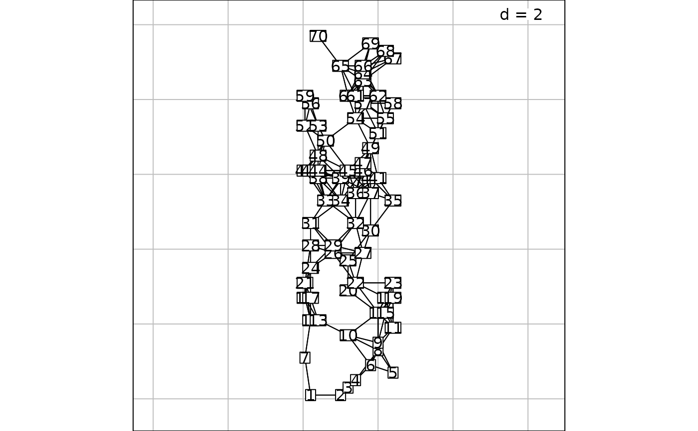
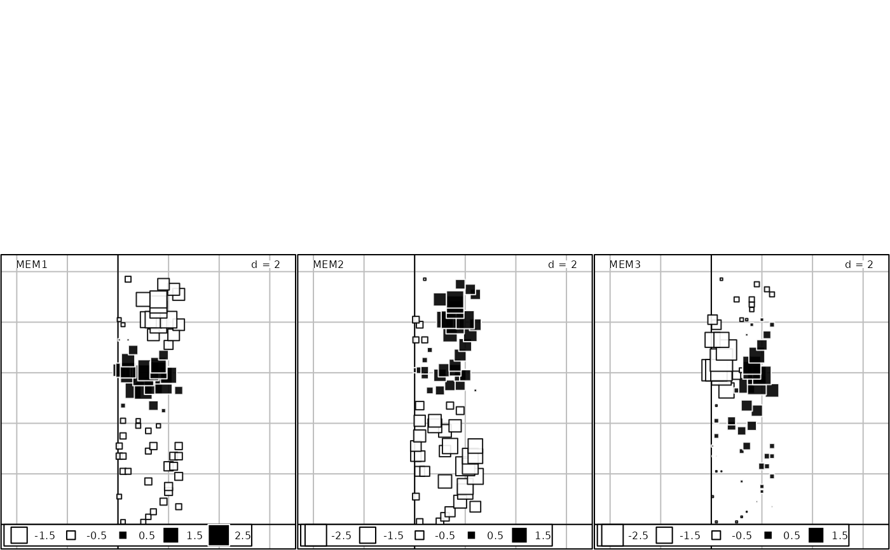

Compute distance-based Moran's eigenvector maps (dbMEM, also called dbMEM spatial eigenfunctions) from a geographic distance matrix, in view of spatial eigenfunction analysis.
dbmem(
xyORdist,
thresh = NULL,
MEM.autocor = c("positive", "non-null", "all", "negative"),
store.listw = TRUE,
silent = TRUE
)Either a matrix of spatial coordinates or a distance matrix
(class dist).
A threshold value for truncation of the geographic distance
matrix. If thresh=NULL, the length of the longest edge of the minimum
spanning tree will be used as the threshold (as returned by the function
give.thresh).
A string indicating if all MEMs must be returned or only
those corresponding to non-null, positive or negative autocorrelation. The
difference between options all and non-null is the following:
when there are several null eigenvalues, option all removes only one
of the eigenvectors with null eigenvalues and returns (n-1) eigenvectors,
whereas non-null does not return any of the eigenvectors with null
eigenvalues. Default: MEM.autocor="positive".
A logical indicating if the spatial weighting matrix should
be stored in the attribute listw of the returned object
A logical indicating if some information should be printed during computation: truncation level and time to compute the dbmem
An object of class orthobasisSp , subclass orthobasis.
The dbMEM eigenfunctions (principal coordinates of the truncated distance
matrix) are stored as a data.frame. It contains several attributes
(see ?attributes) including:
listw: The associated spatial weighting matrix (if
store.listw = TRUE).
dbMEM eigenfunctions were called PCNM in early papers (Borcard and Legendre 2002, Borcard et al. 2004). There is a small difference in the computation: to construct PCNMs, the distance matrix subjected to PCoA contained zeros on the diagonal. In dbMEM, the matrix contains 4*thresh values on the diagonal. The result is that the dbMEM eigenvalues are smaller than the PCNM eigenvalues by a constant (equal to (n.sites * (4*thresh)^2)/2). The dbMEM eigenvalues are proportional to Moran's I coefficient of spatial correlation (Dray et al. 2006; Legendre and Legendre 2012). The dbMEM eigenvectors only differ from the PCNM eigenvectors by a multiplicative constant; this has no impact on the use of MEMs as explanatory variables in linear models. In this implementation, dbMEM eigenvectors have a norm equal to 1 (using the uniform weigts 1/n.sites).
If a truncation value is not provided, the largest distance in a minimum
spanning tree linking all sites on the map is computed (returned by the
function give.thresh). That value is used as the truncation threshold
value (thresh).
A square regular grid produces multiple eigenvalues (i.e. eigenvalues that are equal) and multiple eigenvalues have an infinity of eigenvector solutions. Hence, different eigenvectors may be produced by this function on computers with different operating systems or implementations of R. In addition, the eigenvectors found by the dbmem function from the site coordinates may differ from the eigenvectors computed from the geographic distance matrix among the sites. Nonetheless, the different complete sets of eigenvectors will have the exact same explanatory power (R-square) for a given response vector or matrix, despite the fact that they are not fully correlated on a one-to-one basis. This is, however, not the case for subsets of eigenvectors selected using stepwise procedures.
Borcard, D. and P. Legendre. 2002. All-scale spatial analysis of ecological data by means of principal coordinates of neighbour matrices. Ecological Modelling 153: 51-68.
Borcard, D., P. Legendre, C. Avois-Jacquet and H. Tuomisto. 2004. Dissecting the spatial structure of ecological data at multiple scales. Ecology 85: 1826-1832.
Dray, S., P. Legendre and P. R. Peres-Neto. 2006. Spatial modelling: a comprehensive framework for principal coordinate analysis of neighbour matrices (PCNM). Ecological Modelling 196: 483-493.
Legendre, P. and L. Legendre. 2012. Numerical ecology, 3rd English edition. Elsevier Science BV, Amsterdam.
if(require("ade4", quietly = TRUE) & require("adegraphics", quietly = TRUE)){
data(oribatid)
mite <- oribatid$fau # 70 peat cores, 35 species
mite.xy <- oribatid$xy # Geographic coordinates of the 70 cores
# Example 1: Compute the MEMs corresponding to all non-null eigenvalues
# thresh=1.012 is the value used in Borcard and Legendre (2002)
mite.dbmem1 <- dbmem(mite.xy, thresh=1.012, MEM.autocor = "non-null", silent = FALSE)
mite.dbmem1
# Print the (n-1) non-null eigenvalues
attributes(mite.dbmem1)$values
# or: attr(mite.dbmem1, "values")
# Plot the associated spatial weighting matrix
s.label(mite.xy, nb = attr(mite.dbmem1, "listw"))
# Plot maps of the first 3 dbMEM eigenfunctions
s.value(mite.xy, mite.dbmem1[,1:3])
# Compute and test associated Moran's I values
# Eigenvalues are proportional to Moran's I
test <- moran.randtest(mite.dbmem1, nrepet = 99)
plot(test$obs, attr(mite.dbmem1, "values"), xlab = "Moran's I", ylab = "Eigenvalues")
# Decreasing values of Moran's I for the successive MEM.
# The red line is the expected value of Moran's I under H0.
plot(test$obs, xlab="MEM rank", ylab="Moran's I")
abline(h=-1/(nrow(mite.xy) - 1), col="red")
# Example 2: Compute only the MEMs with positive eigenvalues (and positive Moran's I)
mite.dbmem2 <- dbmem(mite.xy, thresh=1.012)
# or: mite.dbmem2 <- dbmem(dist(mite.xy), thresh=1.012, silent=FALSE)
mite.dbmem2
# Examine the eigenvalues
attributes(mite.dbmem2)$values
# or: attr(mite.dbmem2, "values")
# Examine (any portion of) the dbmem spatial eigenvectors
tmp <- as.matrix(mite.dbmem2)
tmp[1:10,1:6]
}
#> User-provided truncation threshold = 1.012
#> Time to compute dbMEMs = 0.028000 sec


#> MEM1 MEM2 MEM3 MEM4 MEM5 MEM6
#> 1 0.1620574 -0.2982476 -0.035504650 0.11383777 -0.4341443 0.2906948
#> 2 0.1947020 -0.4023768 -0.036135521 -0.03454869 -0.5620367 0.4849196
#> 3 0.2136437 -0.4890009 -0.025861763 -0.21501361 -0.6354105 0.6374601
#> 4 0.2565198 -0.6530629 -0.009275911 -0.46957393 -0.7150526 0.7978259
#> 5 0.2598437 -0.7327767 0.027559734 -0.77345656 -0.4832301 0.6799099
#> 6 0.3453581 -1.0090189 0.034869125 -1.05491045 -0.8388372 1.1059744
#> 7 0.1686130 -0.3240952 -0.032762390 0.26178062 -0.6919921 0.4455021
#> 8 0.4236748 -1.3670651 0.114272484 -1.66289601 -0.4438757 0.8630065
#> 9 0.4423362 -1.4713133 0.147573019 -1.88814315 -0.1643492 0.6274224
#> 10 0.3493720 -1.0831673 0.080660976 -1.06952479 -0.6256306 0.8238873